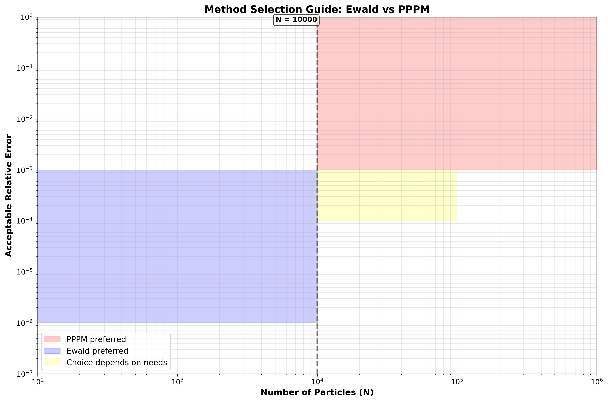

PPPM vs. Ewald (Long-Range Coulomb)
Goal Efficiently compute long-range electrostatics in periodic systems while keeping forces and energies accurate.
Classical Ewald Summation
The Ewald method decomposes the Coulomb potential into short-range (real-space) and long-range (reciprocal-space) components:
Potential Decomposition
The total electrostatic potential is split as:
Step 1: Introduce the error function decomposition
where \(\alpha\) is the Ewald parameter (controls the split between real and reciprocal space).
Step 2: Real-space contribution
The short-range part uses the complementary error function:

where:
\(r_{ij}^n = |\mathbf{r}_i - \mathbf{r}_j - \mathbf{L}n|\) is the distance including periodic images (image index \(n\)).
The sum is truncated at a cutoff radius \(r_c\).
This converges rapidly for larger \(\alpha\).
Step 3: Reciprocal-space contribution
The long-range part is evaluated in Fourier space:
{kind=link}
where:
\(\mathbf{k}\) are reciprocal-space vectors: \(\mathbf{k} = 2\pi (n_x/L_x, n_y/L_y, n_z/L_z)\) with \(n_x, n_y, n_z\) integers.
\(V\) is the system volume.
The sum converges exponentially due to the \(e^{-k^2/(4\alpha^2)}\) factor.
Step 4: Self-interaction correction
This removes the spurious self-energy from the continuous charge distribution approximation.
Step 5: Total energy
Computational Cost
Real-space: \(\mathcal{O}(N \cdot N_{\text{pairs}})\) with short cutoff → effectively \(\mathcal{O}(N)\).
Reciprocal-space: \(\mathcal{O}(N_{\mathbf{k}})\) where \(N_{\mathbf{k}} \approx N\) for comparable accuracy.
Total: approximately \(\mathcal{O}(N^{3/2})\) overall; expensive for large \(N\).
{kind=link}
Ewald becomes computationally expensive for systems with more than ~10,000 particles.
Forces
Forces are obtained from the negative gradient:
Real-space forces:
Reciprocal-space forces are computed via FFT derivatives (see PPPM section).
PPPM (Particle–Particle Particle–Mesh)
PPPM also splits the potential into short- and long-range parts but uses a mesh and FFT for efficiency.
Decomposition Strategy
Like Ewald, we separate:
Step 1: Real-space (short-range)
Same as Ewald:
with cutoff \(r_c\).
Mesh-based Long-Range Calculation
Step 2: Assign charges to the mesh
Charges are spread onto a regular 3D grid using an interpolation function \(w(x)\):
Common choice: polynomial (e.g., linear, quadratic, cubic) assignment functions.
Step 3: Solve Poisson’s equation on the mesh
In reciprocal space:
where:
\(\hat{\rho}\) is the FFT of the gridded charge density.
The factor \(e^{-k^2/(4\alpha^2)}\) damps high-frequency modes (smoothing).
Compute inverse FFT to get the potential on the mesh:
Step 4: Interpolate forces back to particles
The electric field on the mesh:
Interpolate to particle positions using the same function \(w\):
Step 5: Mesh-based force
Computational Cost
Charge assignment: \(\mathcal{O}(N)\).
FFT: \(\mathcal{O}(N_{\text{grid}} \log N_{\text{grid}})\) where \(N_{\text{grid}}\) is the number of grid points.
Interpolation: \(\mathcal{O}(N)\).
Real-space: \(\mathcal{O}(N)\) with short cutoff.
Total: approximately \(\mathcal{O}(N \log N)\) — much faster than Ewald for large systems.
Accuracy Control
Errors in PPPM arise from:
Grid discretization error — reduced by increasing grid resolution.
Assignment/interpolation error — reduced by using higher-order assignment functions.
Real-space cutoff error — reduced by increasing \(r_c\) and/or \(\alpha\).
Fine-tuning these parameters allows direct control of accuracy versus speed.

Practical Comparison
{kind=link}
Ewald Summation
Advantages:
Exact (within machine precision) for a given \(\alpha\).
Straightforward parameter tuning via \(\alpha\), real/reciprocal cutoffs.
Well-established for small to moderate systems.
Disadvantages:
Computational scaling \(\mathcal{O}(N^{3/2})\) becomes prohibitive for \(N > 10^4\) particles.
Requires careful selection of \(\alpha\) and both real and reciprocal cutoffs.
Best for:
Systems with modest particle count (\(N \lesssim 10^4\)).
Applications requiring high accuracy and exact Coulomb summation.
PPPM Method
Advantages:
Fast scaling \(\mathcal{O}(N \log N)\) suitable for large systems.
Errors controlled by independent, tunable parameters (grid size, assignment order, real-space cutoff).
Efficient FFT implementations on modern hardware.
Disadvantages:
Introduces discretization error (not exact).
Requires more careful parameter selection and validation.
Grid memory overhead for very large cutoffs.
Best for:
Large periodic simulations (\(N > 10^4\) particles).
High-throughput molecular dynamics and particle simulations.
Systems where slight discretization errors are acceptable for speed gains.
Summary Table

Aspect |
Ewald |
PPPM |
|---|---|---|
Computational Complexity |
\(\mathcal{O}(N^{3/2})\) |
\(\mathcal{O}(N \log N)\) |
Accuracy |
Machine precision |
Tunable via grid/assignment |
Best System Size |
\(N \lesssim 10^4\) |
\(N \gg 10^4\) |
Primary Parameters |
\(\alpha\), \(r_c^{\text{real}}\), \(r_c^{\text{recip}}\) |
Grid size, assignment order, \(r_c\), \(\alpha\) |
Memory |
\(\mathcal{O}(N)\) |
\(\mathcal{O}(N_{\text{grid}})\) |